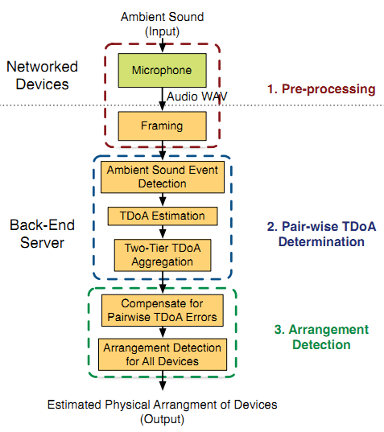

Overview
Physical Arrangement Detection of Networked Devices through Ambient-Sound Awareness (PANDAA) is a low-cost indoor acoustic sensing system. This system features automatic self-localization of networked devices through ambient sound awareness. It doesn't need pre-deployed infrastructure, is readily applicable for commercial-on-the-shelf mobile devices and processes fully automatic detection.
What Problem It Solves
/*TODO: will add more soon*/
How It Works
The PANDAA system addresses the major challenges of ambient sound-based arrangement detection as follows.
Choosing Usable Ambient Sound Segments.Ambient sounds, such as music played on a radio, human speech, noise from a working vacuum cleaner or a barking dog, may vary significantly in signal-to-noise ratio (SNR). In addition, varying proximity to the sound source can lead to significant difference in SNR. PANDAA addresses this challenge using an algorithm that can automatically detect impulsive sounds. Impulsive sounds are short duration sounds with relatively higher amplitude, such as human cough, finger snaps, or beats in a song.
Correcting Inaccurate TDoA Measurements.In indoor environments, TDoA measurements can be affected by environmental factors, such as reflections, non-line-of-sight (LoS) path, or ambient noise. These effects are location-dependent and time-variant. Consider a resident walking in the room. His/her changing location may temporarily cause a few devices to lose LoS, which can cause erroneous TDoA measurements. To compensate for TDoA errors, PANDAA uses a novel two-tier TDoA aggregation algorithm that identifies sounds originating from the same sound source and averages TDoA measurements over them. |
 |
Localizing Devices From TDoA Measurements.TDoA measurements from one single sound event are insufficient for estimating distance between two devices. PANDAA addresses this challenge by considering TDoA measurements from multiple ambient sound sources over time, to estimate inter-device distances and iteratively improve accuracy. |
|
System Implementation And Evaluation
To evaluate the arrangement detection techniques, we present real experiments with a few sound source locations (fixed speakers to localize), and many locations (ambient sound localization). We implemented the PANDAA system using acoustic sensing nodes and deployed them in indoor environments. Each node is built upon an LPC-P2148 prototyping board, featuring an ARM 760 MHz CPU and 48KB memory, with an inexpensive microphone (Knowles MD9745APZ-F [1]) and a Bluetooth radio for diagnosis.
/*TODO: will add more soon*/
Publications
Zheng Sun, Aveek Purohit, Kaifei Chen, Shijia Pan, Trevor Perring, and Pei Zhang. "PANDAA: Physical Arrangement Detection of Networked Devices through Ambient-Sound Awareness”. In the Proceedings of the 13th ACM International Conference on Ubiquitous Computing (UbiComp 2011), pages 425-434, Sept. 2011. Beijing, China. [pdf]
(Acceptance rate = 50/302 = 16.6%)
(Affiliated demo wins the Best Demo Award) [plaque]
Zheng Sun, Aveek Purohit, Philippe De Wagter, Irina Brinster, Chorom Hamm, and Pei Zhang. “(Demo abstract) PANDAA: A Physical Arrangement Detection Technique for Networked Devices through Ambient-Sound Awareness”. In the Proceedings of the 17th ACM Special Interest Group on Data Communication (SIGCOMM 2011), pages 442-443, Aug. 2011. Toronto, Canada. [pdf]
My Contributions
1. Designed and developed an algorithm to iteratively estimate distances between all pairs in a microphone network purely using Time Difference of Arrival from ambient sound sources to microphones.
2. Designed and developed a greedy algorithm to compute the relative microphone locations, making the most use of the information by giving more priorities to more precise pair distance estimations.
3. Designed and implemented a metric to evaluate the system state when it is running.